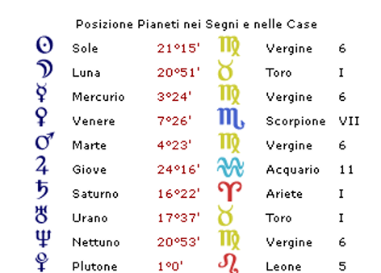

Biografie
Tiziano Terzani
Firenze, 14 settembre 1938
Tiziano Terzani nato a Firenze il 14/09/1938 alle ore 19:15
Vergine Ascendente Ariete


Tiziano Terzani — L'Anima Inquieta: una lettura astrologica
Nel tema natale di Tiziano Terzani, uno degli elementi più significativi è la condizione di Giove, un pianeta completamente afflitto, in rapporto negativo sia con la Luna che con Mercurio. Poiché questi due corpi celesti simboleggiano rispettivamente l'infanzia e l'adolescenza, questa configurazione ci dice immediatamente che il senso di insoddisfazione di Terzani ha radici profonde, affondando nella primissima parte della sua vita.
E la biografia lo conferma pienamente. Terzani nacque in una famiglia umile fiorentina, dove i soldi finivano spesso prima della fine del mese e soddisfare i bisogni primari era tutt'altro che scontato. La madre era costretta a ricorrere periodicamente al Monte di Pietà, impegnando i lenzuoli del suo corredo per affrontare i momenti più difficili. Questa realtà di ristrettezza materiale è descritta con precisione dalla quadratura che Giove forma con la congiunzione Urano-Luna in Toro e in seconda casa: il Toro e la seconda casa rafforzano entrambi il tema delle risorse, del denaro e dei bisogni concreti, rendendo ancora più esplicito il disagio vissuto sul piano materiale.
L'altro aspetto difficile di Giove è l'opposizione che forma con la congiunzione Mercurio-Marte in Vergine e in sesta casa. Questa configurazione aggiunge un ulteriore livello di disagio: quello legato a una condizione di inferiorità sociale. Non è un dettaglio trascurabile, perché la sesta casa nella tradizione astrologica rappresenta la manovalanza, gli operai, la massa indistinta — coloro che subiscono piuttosto che decidere. Ma c'è anche qualcosa di più personale in questo aspetto. La congiunzione Mercurio-Marte parla di un forte bisogno di azione, di movimento, del desiderio di essere sempre fisicamente impegnato in qualcosa. Tuttavia, trovarsi in Vergine e per di più in posizione afflitta significa che questo impulso viene continuamente frenato: la Vergine, nel suo bisogno estremo di ordine, pulizia e perfezione, diventa una gabbia per quella vitalità. E infatti sappiamo che la madre di Terzani non voleva assolutamente che il figlio si sporcasse, né che corresse il rischio di azzuffarsi con i coetanei. Il risultato era un bambino impossibilitato a giocare liberamente con gli altri. È significativo notare come questa afflizione provenga dall'undicesima casa, quella degli amici e dei gruppi: proprio il luogo da cui Terzani era escluso. Marte, inoltre, governa l'Ascendente del suo tema, rendendo questo aspetto ancora più centrale e personale.
A complicare ulteriormente il quadro c'è Saturno in prima casa e in Ariete, che obbliga il soggetto a tenere sotto stretto controllo i propri istinti e la propria esuberanza naturale. Infine, la Luna congiunta a Urano in seconda casa descrive una madre più orientata ai bisogni materiali che a quelli emotivi, più attenta alla concretezza della vita quotidiana che alla sfera affettiva. Subendo poi la quadratura di Giove dall'undicesima casa — l'opposta della quinta, che rappresenta la vitalità — questa madre diventa anche, involontariamente, una figura che limita l'energia vitale del figlio.
Tutte queste restrizioni vissute nell'infanzia hanno lasciato tracce profonde, orientando le scelte di vita dell'adulto. Ma il tema natale di Terzani non racconta solo di limiti: contiene anche gli strumenti con cui egli ha saputo trasformare quelle difficoltà in slancio.
La congiunzione Mercurio-Marte in Vergine e sesta casa gli conferisce una percezione acutissima di tutto ciò che lo circonda, una sensibilità quasi fisica per i dettagli del mondo. Saturno in prima casa aggiunge una forte capacità di autocritica e di analisi. Quando la domenica, con i genitori, si recava a Firenze, il giovane Tiziano osservava tutto con occhi già allenati: le persone sedute al bar a gustare gelati e cioccolata, le belle ville, un mondo completamente diverso da quello in cui era costretto a vivere. Il suo senso critico lo portò presto a riconoscere l'ingiustizia sociale che aveva davanti, e probabilmente già da bambino cominciò a maturare l'idea che quella ingiustizia andasse combattuta. In lui si accendeva una rabbia lucida, alimentata dalla congiunzione Mercurio-Marte in sesta casa in opposizione a Giove in undicesima: il malessere del singolo che sente il peso delle disuguaglianze collettive.
Terzani ha la sesta casa affollata di pianeti — la congiunzione Mercurio-Marte e la congiunzione Nettuno-Sole — tutti in Vergine, il segno cosignificante della sesta casa stessa. Questo rende la Vergine fortissima nel suo tema, donandogli una capacità straordinaria di concentrazione, attenzione e organizzazione. Unita alla determinazione di Saturno in prima casa e all'impegno tenace tipico della Vergine, questa configurazione ha certamente favorito gli studi, permettendogli di vincere diverse borse di studio e di laurearsi in giurisprudenza — una conquista quasi impensabile, per quei tempi, per un ragazzo della sua estrazione sociale.
Dopo la laurea, Terzani non si sentiva ancora pronto per il mondo del lavoro. Ottenne la possibilità di studiare a Leeds, ma dovette rientrare in Italia quando la sua compagna Angela si ammalò. L'umiliazione di doverla riportare a casa dei suoi genitori lo spinse ad accettare un impiego presso la Olivetti. Nel 1967 venne inviato in Sud Africa per conto dell'azienda, e fu lì che scoprì la sua vera vocazione: il giornalismo. In passato aveva scritto qualche articolo sportivo, considerandolo un mestiere da falliti e raccomandati. Ma in Sud Africa si trovò a scrivere sull'Apartheid, su qualcosa che contava davvero, e tutto cambiò. Capì che il giornalismo, se usato per portare alla luce le ingiustizie del mondo, poteva formare l'opinione pubblica e contribuire a migliorare la società. Lo vide come un'arma.
Questa intuizione è scritta nel suo tema natale con una chiarezza quasi sorprendente. Mercurio, governatore della terza casa — quella del giornalismo e della comunicazione — è congiunto a Marte, il dio della guerra, e i due pianeti si trovano in sesta casa, quella degli ultimi, di chi subisce i soprusi dei potenti. Questa congiunzione si oppone a Giove in Acquario e undicesima casa, indicando che il malessere sociale va combattuto, anche attraverso le parole. Il governatore della decima casa, quella della realizzazione professionale, è Saturno in prima casa e in Ariete: azione responsabile, in prima persona, senza deleghe.
Nel 1967 arrivò anche un'altra svolta: vinse una borsa di studio che gli aprì le porte della Columbia University, dove si laureò in diritto internazionale, e poi della Stanford University, dove studiò lingua e cultura cinese. La Cina e il nascente comunismo con le sue promesse di giustizia sociale lo affascinarono profondamente. Continuava nel frattempo a scrivere per il settimanale Astrolabio, e la sua strada si faceva sempre più chiara. Tornato in Italia, fece il praticantato presso Il Giorno di Milano e superò l'Esame di Stato diventando giornalista professionista. Chiese alla testata di essere inviato in Asia. Gli fu negato. Non si arrese: si licenziò dall'Olivetti e girò l'Europa finché nel 1971 trovò chi gli desse quella possibilità. Fu Der Spiegel, il grande settimanale tedesco, ad assumerlo. Per Terzani cominciava una vita nuova.
Ma perché, già nel 1967, Terzani si sentiva così insoddisfatto alla Olivetti — un'azienda all'avanguardia, aperta, attenta ai dipendenti — nonostante i suoi forti valori Vergine, tradizionalmente associati proprio al mondo impiegatizio e alla disciplina lavorativa? La risposta sta in un'altra configurazione del suo tema. Il Sole è congiunto a Nettuno, e questa unione genera una profonda irrequietezza, un desiderio continuo di cambiamento, la sensazione di cercare qualcosa che non si riesce mai del tutto a definire. Questa configurazione è ulteriormente amplificata dal trigono che forma con la congiunzione Urano-Luna tra prima e seconda casa. Urano, come Nettuno, parla di cambiamento, ma in modo più concreto e improvviso: congiunto alla Luna, genera irrequietezza emotiva, un bisogno viscerale di libertà, l'incapacità di stare dentro schemi prefissati. E regala anche qualcosa di prezioso: la capacità istintiva di cogliere le occasioni giuste al momento giusto.
C'è però qualcosa di ancora più profondo. Quattro pianeti, di cui tre personali, si trovano in Vergine e in sesta casa. Come spesso accade in astrologia, quando un segno è così dominante, il suo opposto finisce per esercitare una forza di attrazione altrettanto potente: è il cosiddetto fenomeno del risucchio. I valori dei Pesci e della dodicesima casa — la fuga, il sogno, l'attrazione per il diverso, il desiderio di un mondo altro — si fanno sentire con forza. Nettuno, del resto, è anche il pianeta della fuga. E quell'Urano congiunto alla Luna in seconda casa deve aver fatto sentire Terzani, fin da giovane, come un essere fuori posto, un non-appartenente all'ambiente in cui era nato.
Nei suoi articoli, Terzani non si limitava mai a raccontare i fatti in modo distaccato. Voleva trasmettere emozioni, coinvolgere il lettore, gettare il seme del cambiamento. Per farlo, scendeva tra la gente comune, imparava le lingue, si immergeva nelle culture dei paesi che raccontava. Aveva la carta giusta per questo: Venere in settima casa gli donava la capacità naturale di entrare in armonia con gli altri, di risultare simpatico e accogliente. In Scorpione, poi, questa Venere si faceva ancora più penetrante: il piacere di andare oltre le apparenze, di scavare come un detective ma con affabilità, mettendo l'interlocutore così a proprio agio da spingerlo a confidare pensieri che normalmente avrebbe tenuto per sé. Questa Venere forma un sestile con la congiunzione Mercurio-Marte in Vergine e sesta casa, rendendola direttamente utile al suo lavoro giornalistico. I valori Vergine lo aiutavano nell'organizzazione, nell'attenzione ai dettagli, nell'impegno costante. Plutone in quinta casa e in Leone, al quadrato di Venere, aggiungeva la disponibilità a rischiare anche la vita pur di avere un quadro completo della realtà: Terzani si spingeva in luoghi proibiti, ignorava i tracciati turistici, cercava le strade non battute.
Terzani era un idealista. Credeva davvero che le rivoluzioni armate potessero cambiare il mondo. Quando fu costretto a ricredersi — quando vide con i propri occhi che ogni ideologia, trasformandosi in movimento politico organizzato, riproduce le stesse dinamiche repressive di quelle che voleva abbattere — cadde in una profonda depressione. La disillusione degli ideali è perfettamente rappresentata da quel Giove in undicesima casa che non riceve altro che aspetti negativi.
Eppure, come molti astrologi osservano, un pianeta completamente afflitto in un tema natale acquista spesso una forza enorme proprio per questo: non smette mai di farsi sentire, si manifesta in forme diverse, ritorna. Giove ha attraversato tutta la vita di Terzani come un filo rosso — prima come disagio per la povertà dell'infanzia, poi come sfiducia nelle ideologie, infine come desiderio sempre più urgente di liberarsi di tutto ciò che è materiale.
Quest'ultima fase cominciò quando gli fu diagnosticato un cancro all'intestino. All'inizio si trattava della ricerca di una cura alternativa: i medici tradizionali si concentravano sulla parte malata del corpo, ignorando la persona nella sua interezza, e questo non bastava a Terzani. I suoi valori terra, però, lo tennero sempre con i piedi per terra: non abbandonò mai le cure tradizionali. Ma la ricerca di una guarigione si trasformò lentamente in qualcosa di più grande — una ricerca spirituale, una domanda sul senso profondo della vita. Il Sole congiunto a Nettuno, con la sua irrequietezza mai sopita, lo spingeva verso orizzonti sempre più lontani da quelli materiali. E la concentrazione continua sul corpo malato — tutta quella energia Vergine e sesta casa — finì per innescare di nuovo il fenomeno del risucchio: i valori dei Pesci, il segno opposto, presero forza. Il sogno, l'invisibile, l'anima.
Saturno in prima casa, isolato, portava Terzani ad analizzare senza sosta se stesso e il proprio rapporto con il mondo. Fu forse questa sua natura — così terrena e così spirituale insieme — a renderlo uno degli osservatori più lucidi e appassionati del suo tempo.
Un viaggio cominciato nella materia, nel corpo, nella povertà di un bambino fiorentino che guardava gli altri mangiare il gelato, si era trasformato in un viaggio dell'anima. Il punto di arrivo — quell'equilibrio interiore così a lungo cercato — era forse sempre stato, fin dall'inizio, il vero centro di tutta la sua esistenza: quella undicesima casa, completamente lesa, che non aveva mai smesso di chiamarlo.